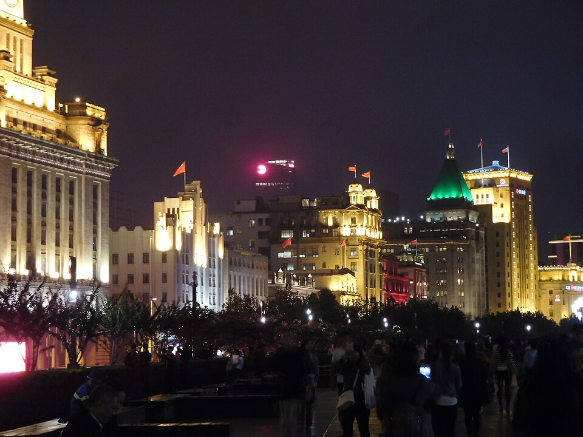
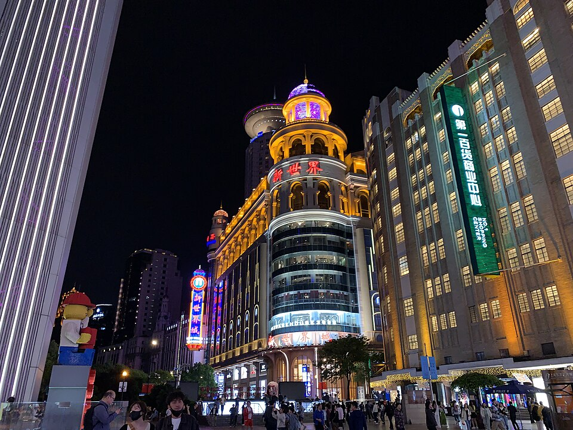
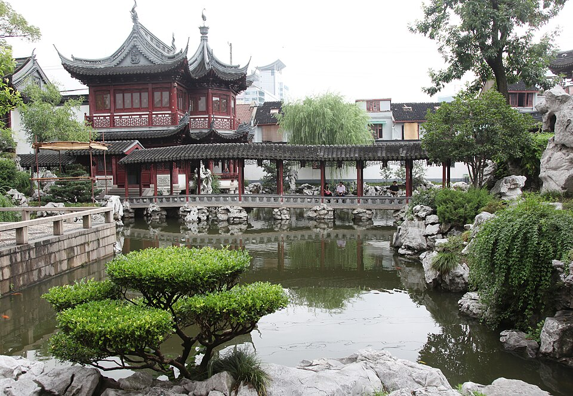
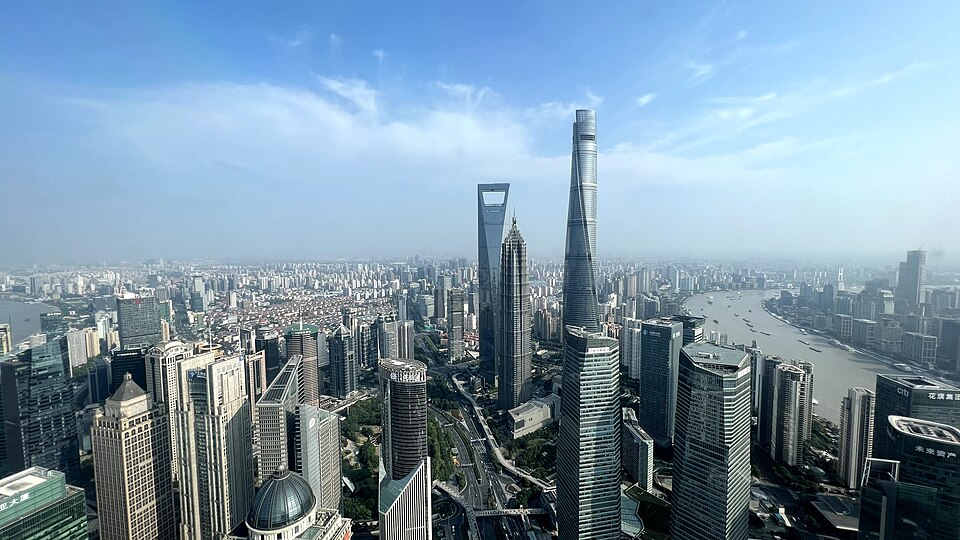
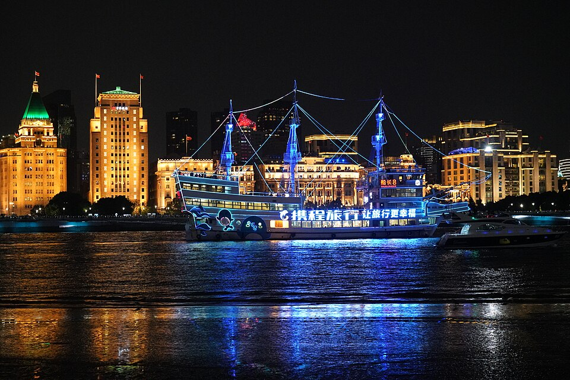
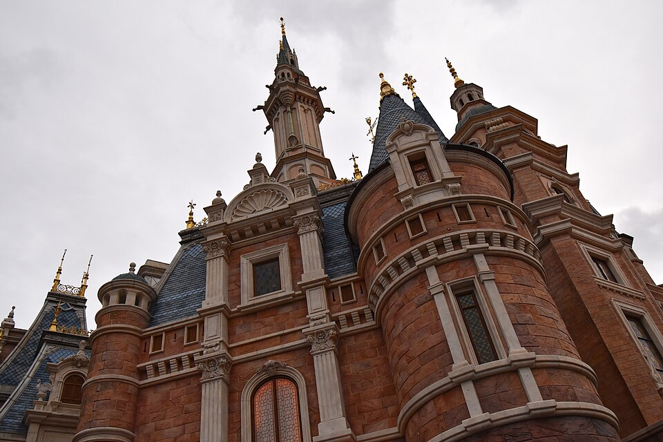
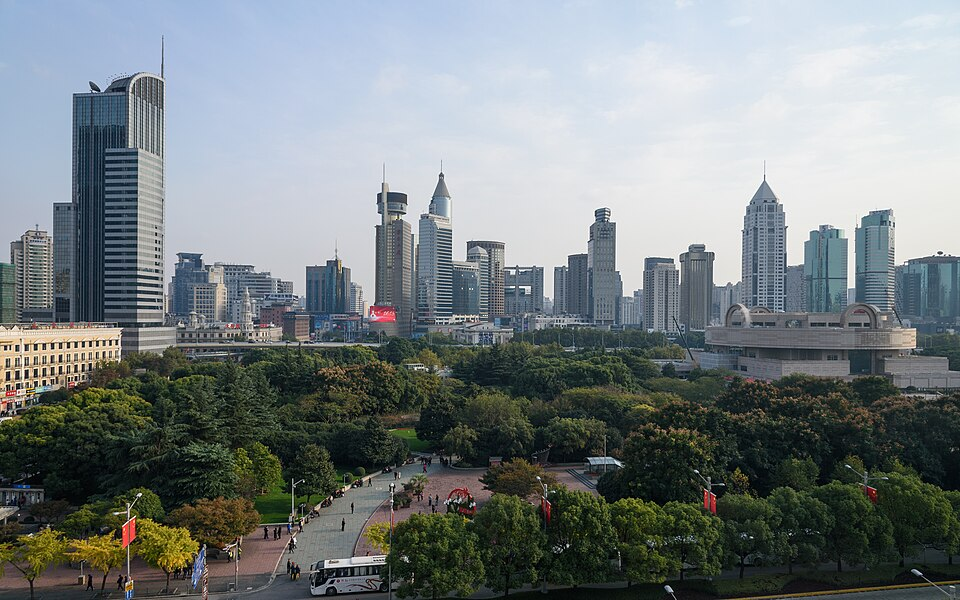
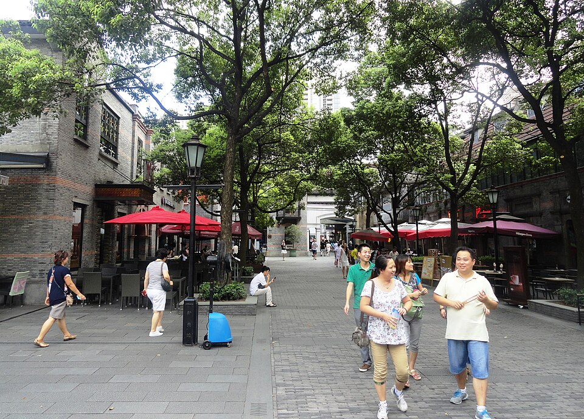

상하이,
우리 가족의 4박 5일
수능을 마친 딸의 새 출발을 축하하며, 온 가족이 함께 상하이로 떠납니다. 맛있는 음식을 먹고, 좋은 풍경을 보고, 피곤하면 쉬어가며 모두에게 편안한 닷새를 보내려 합니다.

첫날 저녁, 우리 가족이 함께 마주할 상하이의 불빛.
와이탄에서 바라본 루자쭈이
사진은 여행지 분위기 참고용이며 계절·날씨·장식은 방문 시점과 다를 수 있습니다.
가족들과 함께 일정을 정하기 위한 제안입니다. 시간과 비용은 예상 기준이며, 실제 항공편·예약 상황·날씨에 따라 조정합니다.
여행을 한눈에
가까운 곳끼리 천천히 둘러보고, 야외에서 한 시간 정도 걸으면 식당이나 카페에서 쉬어갑니다. 오후에는 호텔에서 충분히 쉴 시간을 둡니다.
2월 23일에 출발해 주요 관광은 평일에 하고, 27일 토요일에 돌아오는 안입니다. 딸의 대학 등록·오리엔테이션과 현지 연휴·학교 일정을 확인한 뒤, 모두가 무리 없이 갈 수 있는 날짜로 정하겠습니다.
함께 가는 열 명
항공권과 관광지 입장권의 나이 기준은 서로 다릅니다. 각자의 생년월일을 확인해 예약하겠습니다.
김해 출발 직항편을 우선 알아봅니다
울산에서 함께 출발하는 가족이 많아 김해공항을 우선으로 검토합니다. 비행시간은 약 두 시간으로 잡고, 실제 운항편과 시간을 확인하겠습니다.
한 호텔에서 나흘 동안 편하게
난징동루·인민광장 주변을 중심으로, 관광 중간에 돌아와 쉬기 좋은 호텔을 고릅니다. 한곳에서 4박을 지내며 짐을 다시 싸고 옮기는 시간을 줄이겠습니다.
두 명씩, 다섯 객실을 기본으로
자녀 방의 인접 배정과 미성년자 숙박 기준, 취소·부분취소 조건을 확인합니다. 네 객실로 줄이면 약 30~90만원을 아낄 것으로 예상하지만, 3인실 두 개의 침구가 충분한지 호텔 답변을 받은 뒤 결정합니다.
우리가 갈 곳들
둘러볼 곳을 사진으로 미리 살펴보세요. Day 표시는 방문 예정일입니다. 모두 가야 하는 것은 아니며, 전망대와 쇼핑은 날씨와 컨디션에 따라 선택합니다.








디즈니 대신 주자자오 수향마을을 하루 대안으로 검토할 수 있습니다. 사진은 장소와 분위기 참고용이며, 유람선 사진은 예약 선박을 뜻하지 않습니다.
닷새의 흐름
함께 둘러보고, 중간중간 충분히 쉽니다. 아래 시간은 하루의 흐름을 보여주는 예정 시간이며, 실제 항공편과 예약에 맞춰 조정합니다. 날짜 버튼으로 하루씩 살펴보세요.
도착, 그리고 첫 야경
4~6천 보

네온이 켜진 난징동루에서, 상하이의 첫 저녁을 시작합니다.
난징동루 보행자 거리의 밤
예원, 그리고 황푸강 위에서
7천~1만 보

굽이진 처마와 연못을 따라, 오래된 상하이를 만나는 오전.
예원 주변·호심정 일대
각자 원하는 하루
시내팀 4~6천 보

디즈니팀의 하루, 동화 속 성을 만나러 가는 날.
상하이 디즈니랜드

천천히 걷고, 커피 한 잔 마시며 함께 보내는 오후.
신톈디 카페 거리
함께 모여 새 출발을 축하하는 날
느리게

인민광장에서 느긋하게 시작해, 저녁에는 모두 함께 기념 만찬을 즐기는 날.
상하이박물관 · 인민광장관 외관
여유로운 마무리
자유

마지막 오전은 난징루에서, 기념품과 함께 여행의 여운을 챙깁니다.
난징동루의 낮 풍경
모두 같은 곳에 가지 않아도 괜찮습니다
디즈니를 즐기고 싶은 가족과 시내를 천천히 둘러보고 싶은 가족의 희망을 듣겠습니다. 하루만 여섯 명과 네 명으로 나누는 안을 우선 제안합니다.
예를 들어 자녀 네 명과 어른 두 명이 디즈니에 갈 수 있습니다. 누구에게도 역할을 미리 정하지 않고 희망을 듣겠습니다. 학생들끼리만 움직이지 않도록 어른도 함께하며, 동반 입장 기준은 공식 안내를 확인합니다.
디즈니에 가지 않으면 주자자오 수향마을을 하루 대안으로 검토합니다. 전용차로 약 한 시간을 예상하되, 강가의 추위와 돌길을 고려해 가족들이 원하고 날씨가 괜찮을 때 선택합니다.
디즈니 비용·입장권 참고
위 금액은 입장권·교통·추가 유료 서비스에 따라 달라지는 비교용 예상치입니다. 미방문안도 다른 관광의 교통비·입장료는 들 수 있습니다. 이전 조사 자료의 성인 1일권은 475위안부터였으며, 2027년 2월 실제 가격과 취소·날짜 변경 마감은 결제 전에 확인해야 합니다.
열 명이 편하게 앉는 저녁
줄을 오래 서는 작은 맛집보다 가족 모두가 함께 앉을 식당을 우선합니다. 기념 저녁 식사 한 번은 미리 예약하고, 나머지는 그날의 컨디션과 먹고 싶은 메뉴에 맞춰 정하겠습니다.
중국요리를 먹으며 가족끼리 이야기할 별도 공간을 알아보겠습니다. 열 명의 좌석, 원하는 시간, 최소 주문 금액을 확인한 뒤 확정합니다.

찜기 뚜껑을 열면 시작되는, 상하이의 맛.
샤오롱바오 · 예약 식당이나 확정 만찬 메뉴의 사진은 아닙니다.
끼니별 계획 예산
추운 날이나 피곤한 날에는 멀리 있는 식당보다 호텔이나 가까운 쇼핑몰에서 편하게 식사하겠습니다.
열 명 기준 약 1,824만원을 예상합니다
1인 평균 약 182만원은 비용 규모를 보여주는 숫자이며, 가족별로 낼 금액을 정한 것은 아닙니다. 실제 견적이 아닌 계획 예산으로, 비교 환율은 1위안=205원입니다. 쇼핑·선물비는 포함하지 않았습니다.
먼저 바꿀 수 있는 예약부터
대학 일정과 가까운 여행인 만큼, 가격과 함께 날짜 변경·취소 조건을 봅니다. 호텔, 항공, 공항 차량, 기념 저녁, 입장권 순서로 준비합니다.
늦겨울, 바람과 비에 대비합니다
옷차림을 위한 참고 범위이며 여행일의 실제 예보는 아닙니다. 와이탄·유람선·디즈니에서는 바람과 비도 살펴봅니다. 출발 7~10일 전 예보에 맞춰 야외 일정의 날짜나 시간을 조정합니다.
출발 전에 알아둘 것
2027년 2월 여행에 적용되는 조건을 출발 1~2개월 전 중국대사관 등 공식 안내로 확인하고, 필요하면 비자를 준비합니다. 여권 갱신 필요 여부와 입국 서류도 점검합니다. 방역 요건은 출발 2~4주 전에 다시 확인합니다.
두세 명이 주로 결제를 맡고, 알리페이·위챗페이에 카드를 연결해 사용 가능 여부와 수수료를 확인합니다. 해외 사용 카드와 소액 현금도 준비하며, 대중교통 결제는 사용할 카드나 앱에 맞춰 살펴봅니다.
네~여섯 명이 로밍이나 eSIM을 준비해 두 팀 모두 연락과 길 찾기가 가능하도록 합니다. 할아버지·할머니께 호텔 주소와 가족 연락처를 종이로 챙겨드립니다. 항공편·보험 정보는 오프라인 저장하고, 여권 사본은 필요한 사람이 별도로 보관합니다.
해외 치료비·긴급 이송·항공 지연·수하물 보장을 비교합니다. 할아버지·할머니의 연령과 기존 질환에 따른 가입 조건, 보장 제외 내용도 확인합니다. 비용만 줄이기보다 가족에게 필요한 보장을 기준으로 고르겠습니다.
준비한 것은 하나씩 체크해 주세요
체크한 내용은 이 기기에 저장됩니다.
가족들과 함께 정할 여섯 가지
붉은 표시는 먼저 제안하는 안입니다. 편하게 의견을 주세요. 비용 차이는 비교용 예상치이며, 실제 예약 조건에 따라 달라집니다.
대학 일정과 가족들의 휴가 가능 여부를 먼저 확인합니다. 3월 1일 귀국안은 공휴일 이동이므로 항공편과 혼잡도도 살펴봅니다.
Marriott는 기념 만찬 장소와 같은 건물이라 이동이 없습니다.
여섯 명을 기본으로 생각하되 누구든 원하는 일정을 말해 주세요. 모두 함께 가거나 다른 곳을 선택해도 좋습니다.
4객실은 3인실 두 개의 침구를 호텔이 서면 확인해줄 때만.
울산에서 모이는 가족이 많아 김해를 우선합니다. 다른 지역에서 출발하는 가족이 있으면 함께 조정하겠습니다.
시내는 택시를 중심으로 움직입니다. 관광일에도 전용차가 필요하면 비용과 편의성을 비교해 이용 범위를 넓히겠습니다.
공항 왕복 단체차량
조부모 택시 이동
오후 호텔 휴식
여행자보험
기념 만찬 한 번
유료 전망대
디즈니 Premier Access
종일 전용차
고급 식사 여러 번
돌아와서 우리 모두가
“함께 가길 잘했다”고
말할 수 있는 여행.
맛있는 음식을 함께 먹고, 마음에 드는 풍경 앞에서 사진을 남기고, 피곤하면 잠시 쉬어가면 됩니다. 많이 둘러보지 않아도 괜찮습니다.
2026. 9. 24 조사 자료를 바탕으로 문구를 다듬었습니다.
가격·정책·운영 여부는 최신 확인값이 아니며 예약 전에 다시 확인합니다.
사진 출처
- 1일차 · 난징동루 야경
南京路步行街夜景
EditQ · 원본 사진 · CC BY-SA 4.0
Wikimedia 제공 축소본 사용. 화면 비율에 맞춰 일부 영역만 표시. - 3일차 디즈니팀 · 상하이 디즈니랜드
Enchanted Storybook Castle of Shanghai Disneyland
Fayhoo · 원본 사진 · CC BY-SA 3.0
원본 파일 사용. 화면 비율에 맞춰 일부 영역만 표시. - 4일차 · 상하이박물관
Shanghai Museum 20240512
Simon Wade · 원본 사진 · CC BY-SA 4.0
Wikimedia 제공 축소본 사용. 화면 비율에 맞춰 일부 영역만 표시. - 식사 안내 · 샤오롱바오
Xiao long bao closeup in Shanghai
MR+G · 원본 사진 · CC BY 2.0
원본 파일 사용. 화면 비율에 맞춰 일부 영역만 표시. - 갈 곳 미리보기 · 난징동루
2024-Apr Shanghai East Nanjing Road at night 01.jpg
Chainwit. · 원본 사진 · CC BY 4.0
Wikimedia에서 제공한 축소본. 화면의 4:3 비율에 맞춰 일부 영역만 표시. - 갈 곳 미리보기 · 예원 · 호심정
Yu Gardens 20090724-18.JPG
Hans A. Rosbach · 원본 사진 · CC BY-SA 3.0
Wikimedia에서 제공한 축소본. 화면의 4:3 비율에 맞춰 일부 영역만 표시. - 갈 곳 미리보기 · 루자쭈이
Lujiazui financial district from Oriental Pearl Tower (October 1st 2022).jpg
Bechology · 원본 사진 · CC BY 4.0
Wikimedia에서 제공한 축소본. 화면의 4:3 비율에 맞춰 일부 영역만 표시. - 갈 곳 미리보기 · 황푸강 유람선
DSC00248黄浦江上观光游船.jpg
Ding Kezhong · 원본 사진 · CC BY-SA 4.0
Wikimedia에서 제공한 축소본. 화면의 4:3 비율에 맞춰 일부 영역만 표시. - 갈 곳 미리보기 · 디즈니랜드
Shanghai Disneyland Enchanted Storybook Castle.jpg
Phlizz · 원본 사진 · CC BY-SA 4.0
Wikimedia에서 제공한 축소본. 화면의 4:3 비율에 맞춰 일부 영역만 표시. - 갈 곳 미리보기 · 인민광장 · 박물관
People's Square Shanghai November 2017 002.jpg
King of Hearts · 원본 사진 · CC BY-SA 4.0
Wikimedia에서 제공한 축소본. 화면의 4:3 비율에 맞춰 일부 영역만 표시. - 갈 곳 미리보기 · 신톈디
Xintiandi, Shanghai, China (9734263917).jpg
Fabio Achilli from Milano, Italy · 원본 사진 · CC BY 2.0
Wikimedia에서 제공한 축소본. 화면의 4:3 비율에 맞춰 일부 영역만 표시.